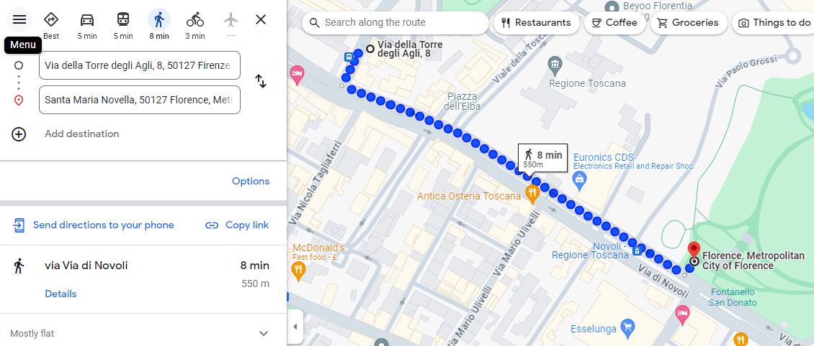
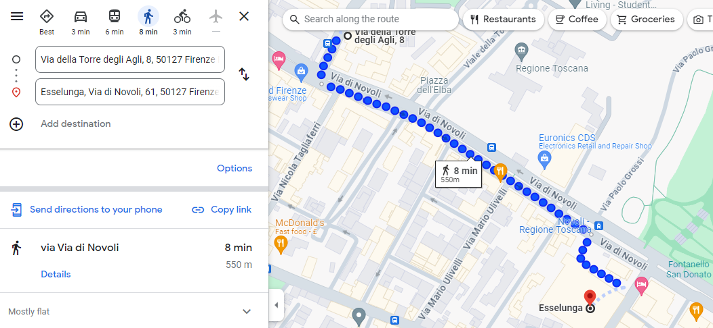
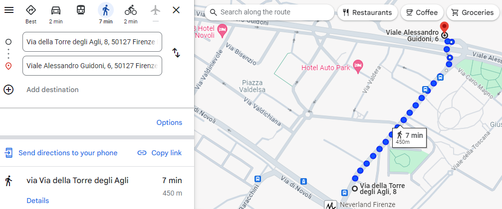

Quartiere e dintorni
La zona di Novoli, pur non essendo nel vivace centro città, offre un rifugio tranquillo e conveniente con un'ampia varietà di servizi locali.
Dietro l'angolo
- Goditi una bella colazione alla Pasticceria Gaetano a pochi metri sotto casa, assapora i deliziosi prodotti appena sfornati del panificio La Schiacciateria e lasciati tentare dal famoso 'panino con il lampredotto' dalla macelleria Ambrogi. Un negozio di kebab, un piccolo negozio di alimentari e un fruttivendolo completano il quandro delle attività locali, proprio dietro l'angolo tra Via della Torre degli Agli e Via di Novoli.
- Nelle vicinanze, vi è anche un rinomato ristorante di pesce e un tradizionale camioncino street food per il lampredotto e altre varietà di panini, entrambi raggiungibile a piedi.

Parco San Donato
- Il Parco San Donato è perfetto per una passeggiata nel verde o un momento di relax all'aperto, a soli 5 minuti a piedi da casa.


Centro commerciale Esselunga
- Per una spesa completa, l'Esselunga è la meta ideale, facilmente raggiungibile in soli 8 minuti a piedi.


Centro commerciale San Donato
- Il Centro commerciale San Donato, con il cinema The Space e la palestra Virgin Active, offre opportunità di shopping e intrattenimento, a soli 12 minuti a piedi o 8 minuti in tram.


Farmacia più vicina
- Per qualsiasi necessità medica, la farmacia più vicina è a soli 5 minuti a piedi.


Tripperia street food
- Se sei amante del cibo di strada, la tripperia vegana nell'area Pic-Nic è a soli 7 minuti a piedi.


Note
- Testo segnaposto.